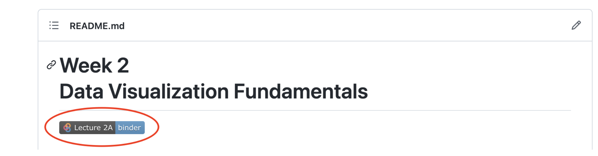
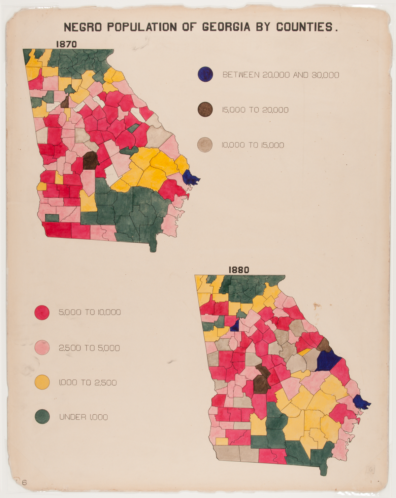
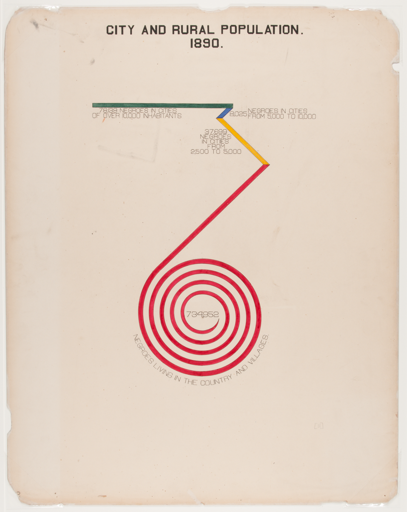
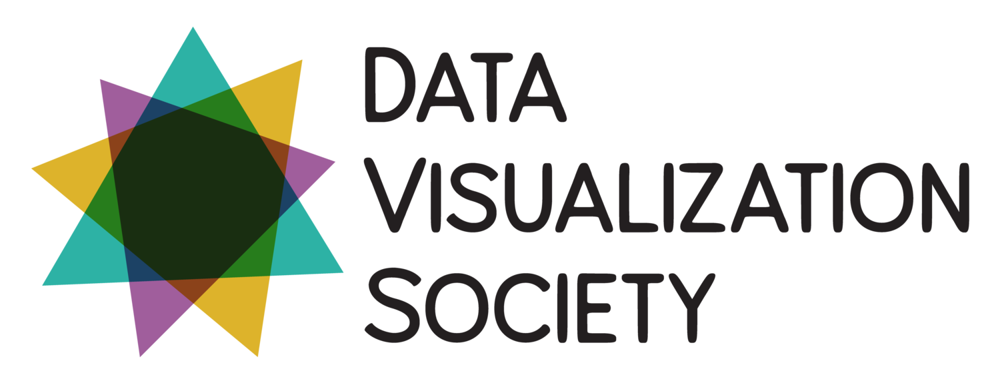
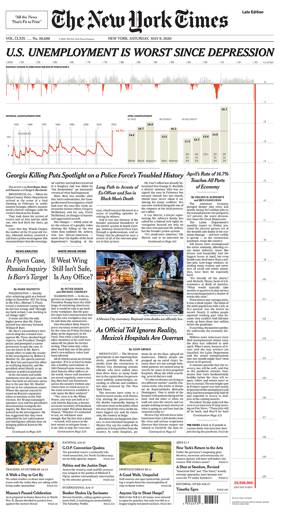
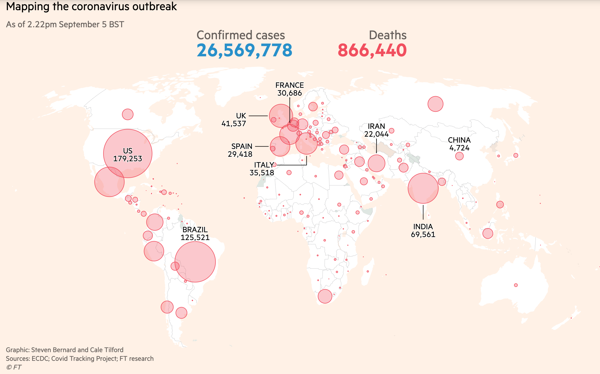
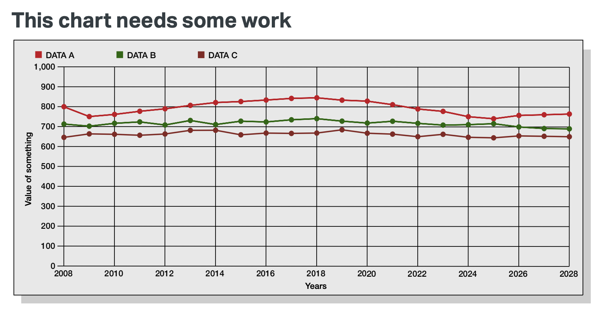
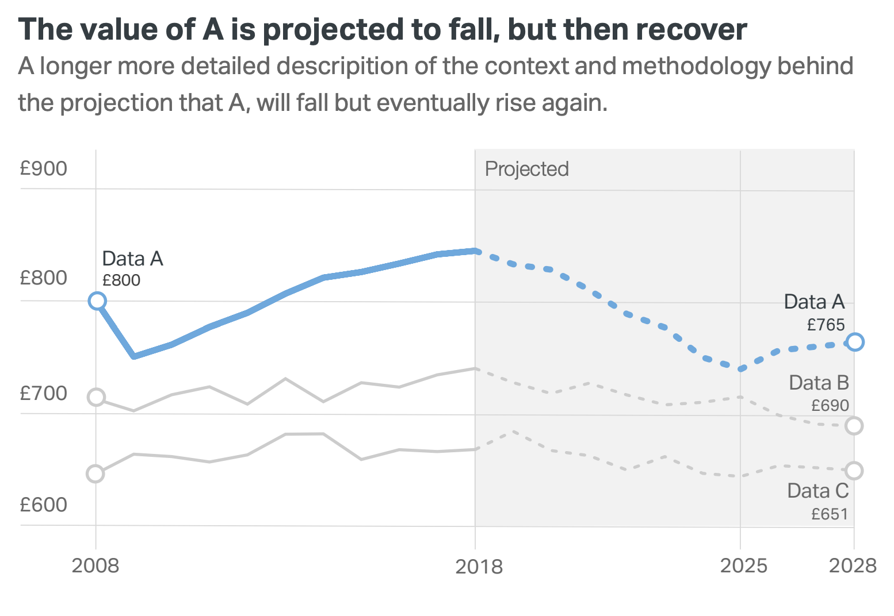

Week 2: Data Visualization Fundamentals
- Section 401
- Sep 11, 2023
Housekeeping
- Ed Discussion: https://edstem.org/us/courses/42616/discussion/
- HW #1 due on Wednesday 9/20
- Office hours:
- Nick: TBD
- Teresa: Fridays, 10:30AM to 12:00PM
- Sign-up for time slots on Canvas calendar
Questions / concerns? - Email: nhand@design.upenn.edu - Post questions on Ed Discussion
Guides
Check out the guides section of the course website for
- Setting up Python
- Using mamba
- Jupyter notebooks and JupyterLab
- Troubleshooting Python installation issues
- Tips for managing the folder structure on your laptop
Sign up for free DataCamp access if you haven’t yet. See the course website for instructions.
Good courses for some of the data viz libraries we’ll talk about today:
Git & GitHub Resources
Reminder: following along with lectures
Easiest option: use Binder

Harder option: downloading Github repository contents

Today’s agenda
- A brief overview of data visualization
- Practical tips on color in data vizualization
- The Python landscape:
A brief history
Starting with two of my favorite historical examples, and their modern renditions…
Example 1: the pioneering work of W. E. B. Du Bois


Re-making the Du Bois Spiral with census data
Using the Du Bois spiral to show the demographics of whites in seven states:
Green is urban, blue suburban, yellow small town, red rural. Source
Additional references
Example 2: the Statistical Atlas of the United States
- First census: 1790
- First map for the census: 1850
- First Statistical Atlas: 1870
- Largely discontinued after 1890, except for the 2000 Census Atlas
Using modern data
See http://projects.flowingdata.com/atlas, by Nathan Yau
Industry and Earnings by Sex
Source: American Community Survey, 5-Year, 2009-2013
Median Household Income
Many more examples…
More recently…two main movements:
- 1st wave: clarity
- 2nd wave: the grammar of visualization
Wave 1: Clarity
- Pioneered by Edward Tufte and his release of The Visual Display of Quantitative Information in 1983
- Focuses on clarity, simplicity, and plain color schemes
- Charts should be immediately accessible and readable
The idea of “Chartjunk”
- Coined by Tufte in Visual Display
- Any unnecessary information on a chart
Some extreme examples
Wave 2: the grammar of visualization
Influenced by The Grammar of Graphics by Leland Wilkinson in 1999
Focuses on encoding data via channels onto geometry
Mapping data attributes on to graphical channels, e.g., length, angle, color, or position (or any other graphical character)
Less focus on clarity, more on the encoding system
Leads to many, many (perhaps confusing) ways of visualizing data
ggplot2provides an R implementation of The Grammar of GraphicsA few different Python libraries available
Where are we now?
- Both movements converging together
- More visualization libraries available now than ever
A survey of common tools
- From a 2017 survey by Elijah Meeks
- Former data visualization engineer at Apple, Netflix; now at Noteable
- Excellent data viz resource
- Find him on Twitter or Medium: @Elijah_Meeks
- Executive director of the Data Visualization Society

- Community-based data viz organization
- Great resources for beginners
- Check out the Nightingale: The Data Visualization Society’s Blog
The 7 kinds of data viz people
- From this blog post
- Illustrations by Susie Lu
See, e.g. Data Sketches
Data visualization as communication
- Data visualization is primarily a communication and design problem, not a technical one
- Two main modes:
- Fast: quickly understood or quickly made (or both!)
- Slow: more advanced, focus on design, takes longer to understand and/or longer to make
Fast visualization
- Classic trope: a report for busy executives created by subject experts \(\rightarrow\) as clear and simplified as possible
- Leads readers to think that if the chart is not immediately understood then it must be a failure
- The dominant method of data visualization
Moving beyond fast visualizations
- Thinking about what charts say, beyond what is immediately clear
- Focusing on colors, design choices
Example: Fatalities in the Iraq War
by Simon Scarr in 2011
Question: What design choices drive home the implicit message?
Data Visualization as Storytelling
The same data, but different design choices…
A negative portrayal
A positive portrayal
Design choices matter & data viz has never been more important
Some examples from the past few years…


- Data Viz’s Breakthrough Moment in the COVID-19 Crisis
- Interview with John Burn-Murdoch About his COVID Data Viz
- John Burn-Murdoch’s Twitter
- COVID-19 Data Viz from the Financial Times
Data Viz Style Guides
Lots of companies, cities, institutions, etc. have started design guidelines to improve and standardize their data visualizations.
One I particularly like: City of London Data Design Guidelines
First few pages are listed in the “Recommended Reading” portion of this week’s README.
London’s style guide includes some basic data viz principles that everyone should know and includes the following example:

City of London Data Design Guidelines

Good rules
- Less is more — minimize “chartjunk”
- Don’t use legends if you can label directly
- Use color / line weight to focus the reader on the data you want to emphasize
- Don’t make the viewer tilt their head — Use titles/subtitles to explain what is being plotted
Now onto colors…
Choose your colors carefully:
- Sequential schemes: for continuous data that progresses from low to high
- Diverging schemes: for continuous data that emphasizes positive or negative deviations from a central value
- Qualitative schemes: for data that has no inherent ordering, where color is used only to distinguish categories
ColorBrewer 2.0
- The classic tool for color selection
- Handles all three types of color schemes and provides a map-based visualization
- Provides explanations from Cynthia Brewer’s published works on color theory
- Tests whether colors are colorblind safe, printer friendly, and photocopy safe
- ColorBrewer palettes are included by default in
matplotlib
Perceptually uniform color maps
- Created for
matplotliband available by default - perceptually uniform: equal steps in data are perceived as equal steps in the color space
- robust to color blindness
- colorful and beautiful
For quantitative data, these color maps are very strong options
Need more colors?
Almost too many tools available…
Some of my favorites
- Adobe Color CC: allows you to explore other people’s color palettes and create new ones
- Paletton: similar to Adobe Color, but slightly more advanced
- Chroma.js Color Scale Helper: create color palettes by interpolating between named HTML colors
- Colorpicker for data: automatically generate new color palettes, but they aren’t always useful
Making sure your colors work: Viz Palette
Wrapping up: some good rules to live by
- Optimize your color map for your dataset
- Think about who your audience is
- Avoid palettes with too many colors: ColorBrewer stops at ~9 for a reason
- Maintain a theme and make it pretty
- Think about how color interacts with the other parts of the visualization
Note: no easy way to get legend added to the plot in this case…
That’s it!
- See you next week when we continue Data Viz Fundamentals